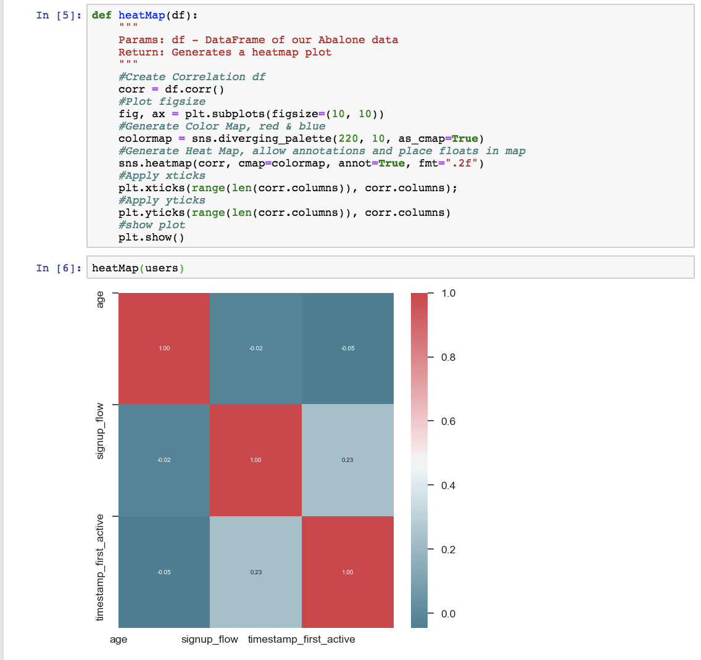

1. The structure of the dataset will make it difficult to feed into a machine learning model as it is not all of the same type (an integer for example) and there are categorical variables present. In addition, there are NAN values in the dataset so there is a lot of feature engineering/cleaning of the dataset that needs to get done. In addition, some of the features in the dataset are not relevant to the machine learning mdoel and will need to be removed.
For the Airbnb dataset, we use a specific kernel to explore different statistics of the data. After using kaggle to download the kernel, I opened it up on Jupyter Notebook and built another data visualization that is relevant to the dataset as shown below. I generated a heatmap to look at the correlation between various features of the dataset. 
A recent estimate claims that around 13 million people have some level of proficiency in American Sign Language, making it the third most commonly used language in the United States. I will be working on a use case for people who use Sign Language as their primary mode of communication. The goal of the project is to create a system that will convert video feed of a person signing in American Sign Language into English text to encourage communication between those who have no other way of expressing their ideas other than signing and those who cannot sign. This idea hopes to cater to the 500,000 deaf people in the US and Canada who’s natural language is the American Sign Language (ASL). Some of the data sources that we I hope to use include the American Sign Language Lexicon Video Dataset, a database of more than 3,300 ASL signs in citation form, each produced by 1-6 native ASL signers, for a total of almost 9800 tokens. The dataset includes multiple synchronized videos showing the signing from different angles, with annotations including gloss labels, sign start and end time codes, start and end handshape labels for both hands, morphological and articulatory classifications of sign type. For compound signs, the dataset includes annotations for each morpheme. To facilitate computer vision-based sign language recognition, the dataset also includes numeric ID labels for sign variants, video sequences in uncompressed-raw format, and camera calibration sequences. I hope to preprocess these videos by trying to crop the video at the start and end time codes and remove color/apply filters to only focus on the two hands in the video. I will not be looking at facial expressions of the individual as this will make the analysis more complicated. I could only find image datasets on Kaggle with labels as the ASL alphanet or basic gestures rather than a dataset that contains a more comprehensive vocabulary.